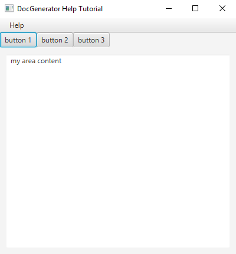
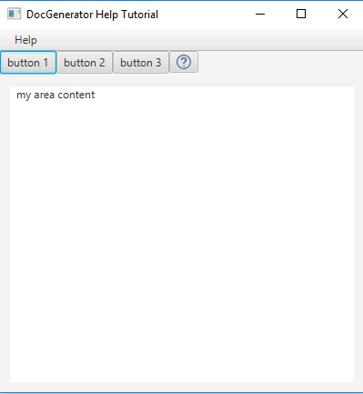
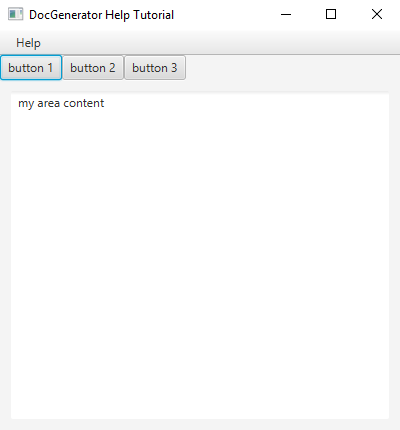
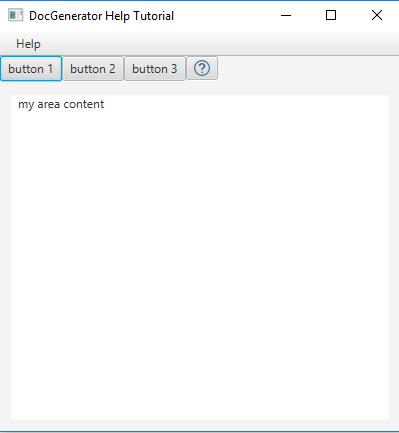

Context-sensitive Help JavaFX tutorial
1 Specify the Help content configuration
2 Generate the help content
3 Create our JavaFX application
4 Integrating the context-sensitive help in our JavaFX application
5 Launch our application
6 See Also
2 Generate the help content
3 Create our JavaFX application
4 Integrating the context-sensitive help in our JavaFX application
5 Launch our application
6 See Also
This article is tutorial which explains how to add a Context-sensitive Help to a JavaFX application. You will:


To use the Context-sensitive help:
- Reuse the content specified for the Help system JavaFX tutorial
- Specify the Help content configuration to add the references to use for our Context-sensitive help
- Regenerate the zip file containing the help content
- Modify the JavaFX Java code to integrate the Context-sensitive help to our application components
Specify the Help content configuration
We will reuse the configuration specified for the Help system Swing tutorialGenerate the help content
Let's generate our help content. Double-click on the jar file of the application and:- Input directories: Set your directory
- Output directory: Set another empty directory for the help content result
- Output type: Set "HELP" as the output type
- Don't optimize for Swing: Uncheck the "optimize for Swing" checkbox
- Click on "Apply"
articles resources -- articles.xml -- index.html -- README.txtThe
articles.xml now also contains the references for the help IDs.
Create our JavaFX application
We will reuse the code written for our Help system JavaFX tutorial. We will add a toolbar with several buttons:public void start(Stage primaryStage) { createFactory(); BorderPane root = createLayout(primaryStage); scene = new Scene(root, 400, 400); createToolbar(top); primaryStage.setTitle("DocGenerator Help Tutorial"); primaryStage.setScene(scene); primaryStage.show(); } private void createToolbar(VBox top) { HBox toolbar = new HBox(); top.getChildren().add(toolbar); Button button1 = new Button("button 1"); Button button2 = new Button("button 2"); Button button3 = new Button("button 3"); toolbar.getChildren().add(button1); toolbar.getChildren().add(button2); toolbar.getChildren().add(button3); }We have the following Window:

Integrating the context-sensitive help in our JavaFX application
Now we will integrate a Help system with our Help content in this application. For that, we need to:- Register the application Scene with our
JFXHelpContentViewer:
viewer.registerContextHelpScene(scene);
- Register each button for which we want to add a context-sensitive help:
viewer.registerContextHelp(<helpID>, button);
- Create the context-help button (to start the context-sensitive help), and add it to the toolbar:
Button helpButton = viewer.createContextHelpButton(); toolbar.getChildren().add(helpButton);
private void createToolbar(VBox top) { viewer.registerContextHelpScene(scene); HBox toolbar = new HBox(); top.getChildren().add(toolbar); Button button1 = new Button("button 1"); viewer.registerContextHelp("button1", button1); Button button2 = new Button("button 2"); viewer.registerContextHelp("button2", button2); Button button3 = new Button("button 3"); viewer.registerContextHelp("button3", button3); toolbar.getChildren().add(button1); toolbar.getChildren().add(button2); toolbar.getChildren().add(button3); Button helpButton = viewer.createContextHelpButton(); toolbar.getChildren().add(helpButton); }We now have the following window for our application:

Launch our application
Now the context-sensitive help is integrated in our Swing application.To use the Context-sensitive help:
- Click on the question-mark button to call the context-sensitive help
- The pointer changes to a new shape:

- Left click on a button, then the Help window appear on the associated article and title
See Also
- Tutorials: This article presents a list of tutorials
- Help system: This article explains how to use the JavaHelp-like feature of the tool
- Help JavaFX API: This article explains how to use the Help JavaFX API
×

Categories: javahelp | tutorials